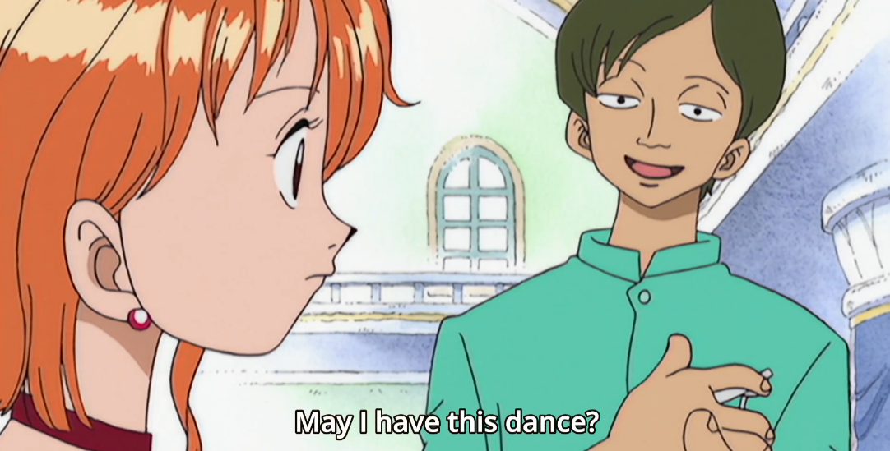
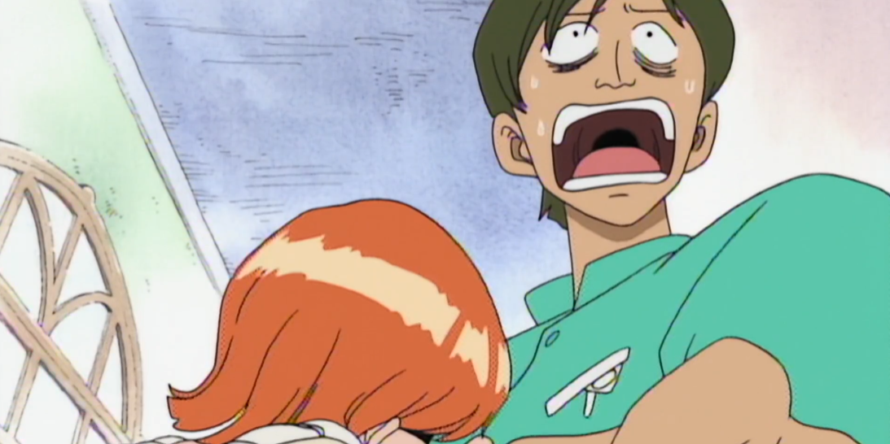
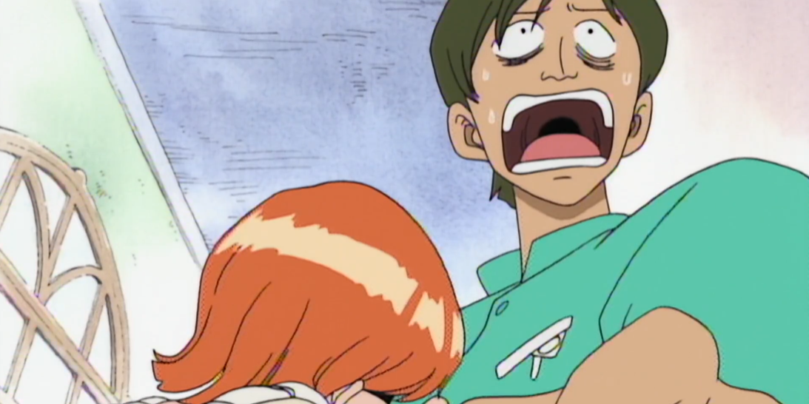
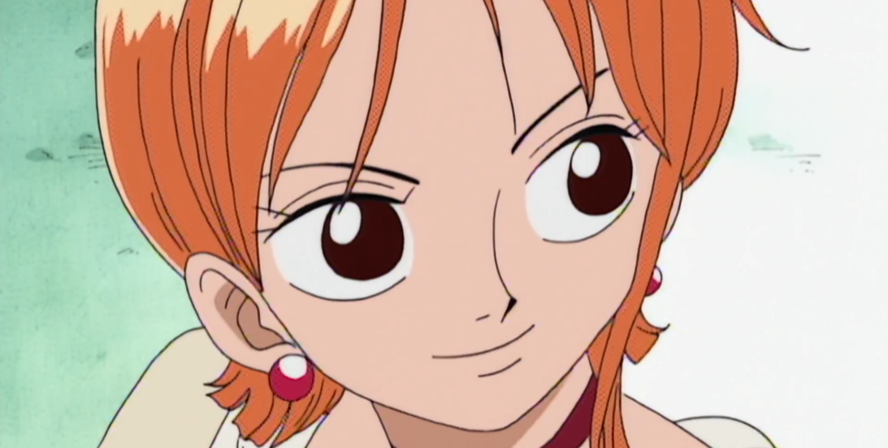
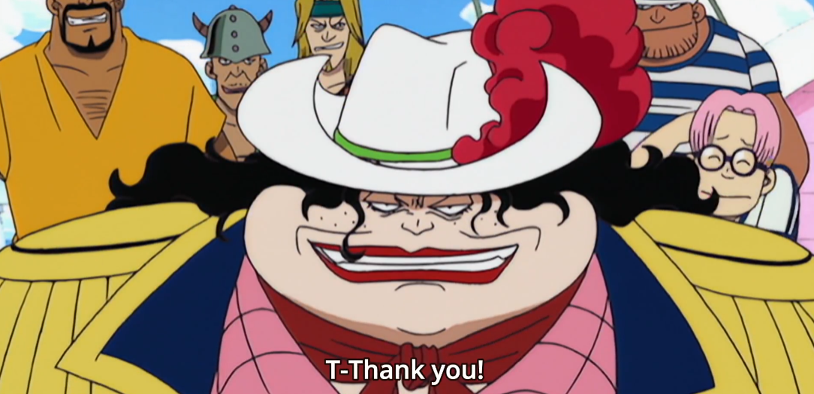
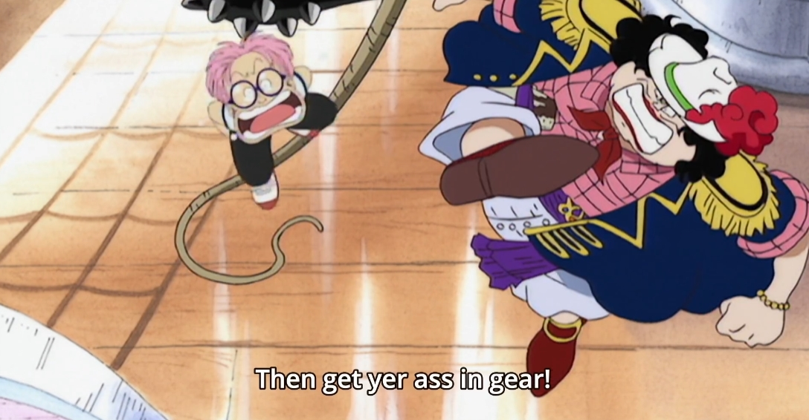
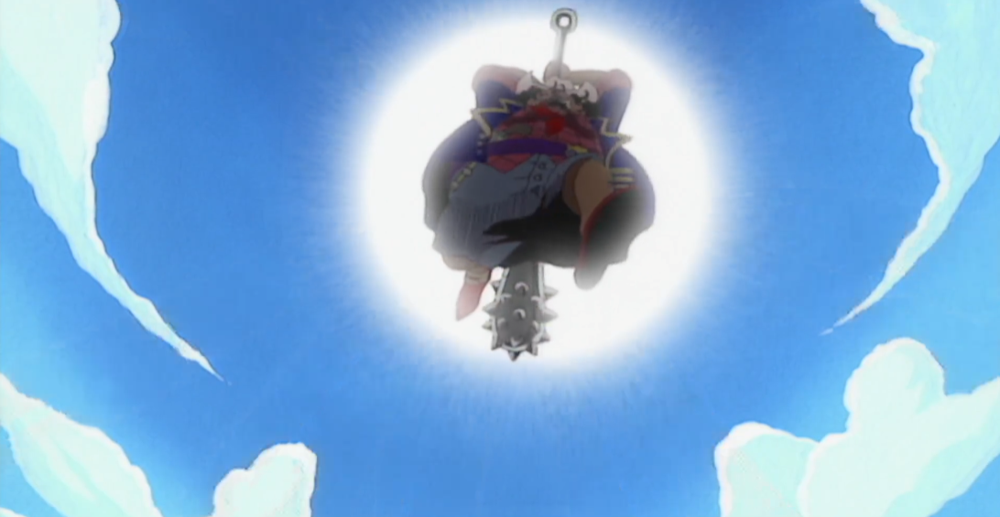
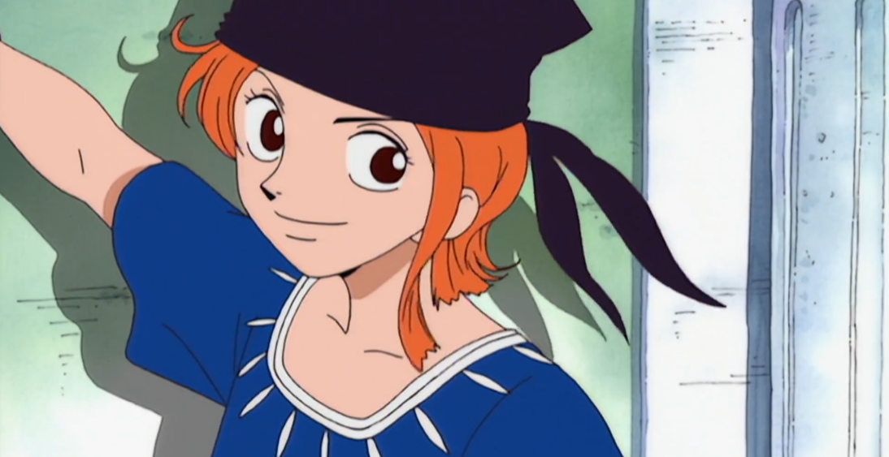
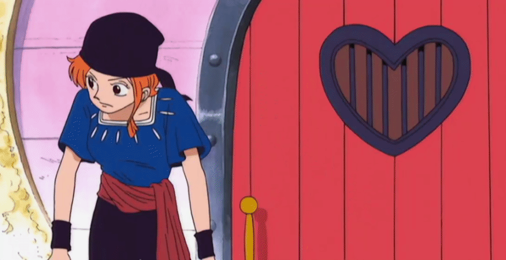

Ok but why did Alvida low key have one of the cleanest ships in the show? Like seriously, all pink looks kinda dope on ship. Lmaooo. Anyways let's get it going.

Our introduction into this pirate world starts where we will be spending most of our time, out on sea. We're greated with a relatively calm cruise ship with Navy guards scouting. Inside we see the captain assuring the massive whirlpool next to the ship should pose no harm.... somehow. Standard Anime Gentleman #1 enters asking an orange haired girl to dance in this fancy looking ballroom (I wonder who she is....)

Anyways we return back to those navy men or marines (not really sure) still trying to retrieve that barrel they found in the water. Cut away to the dude wetting himself at the site of a gorgeously mysterious pink ship across from them. Our first pirate crew introduction!! And it gets heated quick. Canons are immediately fired and chaos ensues as everyone on the lower level goes into a panic, including our orange haired friend. I guess the captain never expected a pirate attack while boasting about the ship's badassery.
 

Also, what was the slight smile? Hmmm. Questions for later

We immediately hear the voice of a very..... mature woman commanding the ship. (Is that the right word?) As the civilian ship gets demolished we see some very beautiful eyes accompanied by a trick question. "Who's the most beautiful of all on these seas?". Let me tell you right now, Coby is a smart kid. There's only one answer she wanted to hear and you could tell immediately what it was. We are met with a scrawny looking child, absolutely terrified by his current situation, accompanied by a group of generic ruffians ready to raid the ship they just fired at. Design wise I think we're looking at a large array of unique individuals equally as ugly. I guess we should be prepared for the worst.

Quite the fierce demeanor I would say. A fairly interesting weapon being a spiked club, not something you see often. Absolutely love the hat, although I think we'll be seeing an even better one pretty soon *wink wink*.
After a bit more destruction to the civilian ship we see our mystery barrel go on a little journey through the ship. Alongside little barrel, our orange haired maiden looks for a way to escape the impending onslaught. We finally get a name! The terrifying Iron Club Alvida, the woman pirate! And she is ready for action, immediately commanding her crew to invade the ship. Of course little Coby is afraid, too afraid to invade the ship in fact. I mean, he is like 12 years old or something. Immediate child abuse after Alvida kicks the kid on board. Alvida jumps on as well and considering her size she has BOUNCE! Like wow, did not expect so much agility. I guess its necessary in this pirate world.


The pirates corner the citizens on the ship and WOAH! Our orange haired friend undergoes a quick transformation. Is she apart of Alvida's crew? Or is she on a crew of her own? SO MANY QUESTIONS!!!

Coby begins exploring on his own until he happens upon that mysterious barrel. Cut to our shapeshifting female friend jumping onto Alvida's ship and running into one of Alvida's crew members. Instead of a greeting however she immediately goes for the forbidden kick (that's what I'm going to call it but you know what I mean).

Coby begins hauling over this barrel thought to have some alchohol when some of Alvida's crew stop him. The big brute decides to use that macho strength to break it open and then....

We are introduced to a brand new character.... sleeping in a barrel? Guess you never know what you'll find out in these waters. As a fairly scrawny looking kid with a strawhat, he appears completely unfazed by what he's just done. Knocking out that big dude would normally be pretty tough but he sorta just, stretched. The other two shocked by what happened pull out their blades